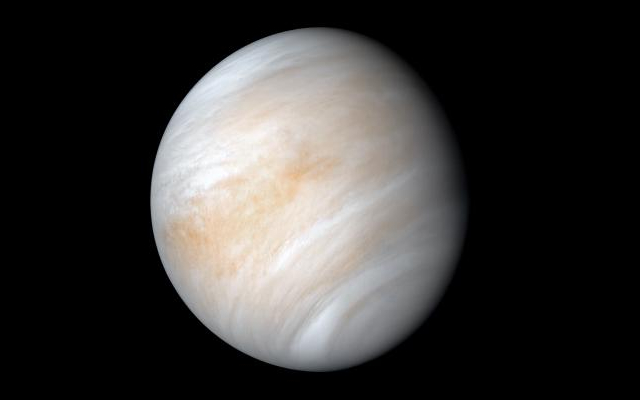
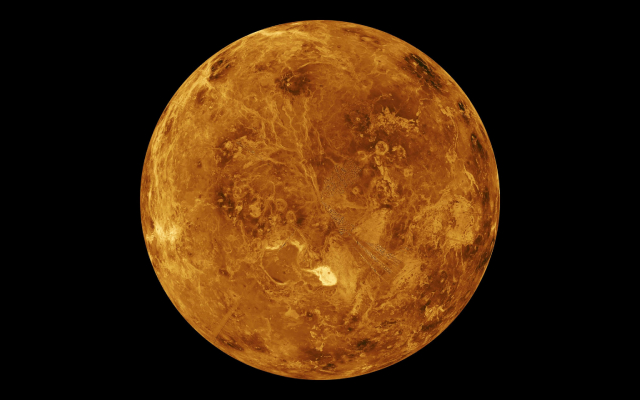
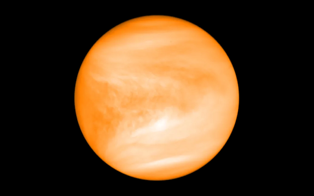

Venus
Venus is the second planet from the Sun. It is one of the four terrestrial planets within our Solar System
Information

| Property | Value |
|---|---|
| Mass (1024 kg) | 4.8673 |
| Volume (1010 km3) | 92.843 |
| Mean Density (kg/m3) | 5243 |
| Surface Area | 460.2 million km2 |
| Average Temperature | 737 K (464 C) |
| Wind Speeds | 0.3 to 1.0 m/s (surface) |
About Venus


Venus is the second planet from the Sun. It is one of the four terrestrial planets within our Solar System, meaning it is characterised by a solid surface and composed of silicate rocks and metals. It is the closest in mass (and size) to Earth. The atmosphere on this planet is thick and dense, composed primarily of carbon dioxide and a sulfuric acid cloud covering. The surface has a mean temperature of 737 K (464 C).